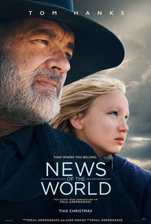

News Of The World

News of the World is a 2020 American Western drama film co-written and directed by Paul Greengrass, based on the 2016 novel of the same name by Paulette Jiles, and starring Tom Hanks and Helena Zengel. The film follows a Civil War veteran who must return a young girl who was taken in by Native Americans as an infant to her last remaining family.
News of the World was released theatrically by Universal Pictures in the United States on December 25, 2020, and was released by Netflix in other international territories on February 10, 2021.[6] It received positive reviews from critics who praised Hanks's and Zengel's performances as well as the cinematography, the score and Greengrass’s direction. It was named one of the ten best films of 2020 by the